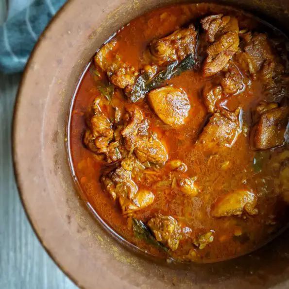

Sri Lankan Chicken Curry

This classic Sri Lankan Chicken Curry is the most popular meat
curry in all Sri Lanka. The star of all the Lankan parties and
gatherings. And the base of many other Sri Lankan dishes.
If you love Sri Lankan food and hot and spicy curries, you got to
give this lip smacking, authentic chicken curry recipe a try. It’
s spicy, slightly tangy, aromatic and so so good. And goes with
literally any Sri Lankan rice and curry menu, bread, kottu, roti,
string hoppers, hoppers, or pittu. Oh the possibilities are
endless.
Ingredients
To marinate chicken
- 1/4 tsp turmeric powder
- 1/2 tsp crushed black pepper
- 1 tbsp Tamarind paste
- 1 tsp salt
Other ingredients
-
4 chicken thighs bone-in, skin removed cut into pieces ((4
thighs = 1.5lb = 680g))
- 1/3 cup chopped onion
- 1/3 cup chopped tomato
- 4 large cloves of garlic
- 1 inch piece of ginger
- 1 sprig of curry leaves
- 1 pandan leaf broken into pieces
- 3 cardamom
- 3 cloves
- 1 piece of Garcinia cambogia/Goraka
- 1 tbsp roasted chili powder
- 2 tsp roasted curry powder
- 1/2 tsp crushed black pepper
- 1 tbsp coconut oil
-
1 cup water ((substitute with thin coconut milk for a
creamier curry))
- salt to taste
Steps
-
Marinate chicken with all the marinating ingredients given in
the list overnight or at least half an hour.
-
In a mortar and pestle, grind cardamom and cloves. You can
remove the shells.
-
Then add ginger and garlic into the mortar and pestle and
crush them to a coarse paste.
-
Heat a pan. (clay pots are ideal, if not use any heavy bottom
pan) Add the ginger-garlic paste you made in the previous step
. Also, add curry leaves and pandan leaves.
-
When the mixture starts to turn brown add roasted curry
powder and roasted chili powder. Mix and toast well in the
oil for about 30 seconds. Do not let the spices burn.
-
Add the piece of goraka (Garcinia cambogia) onions and
tomatoes. Mix well with the spices. Lower the heat.
-
cover, and cook until onions start to sweat and tomatoes
become mushy. Make sure to mix in between to distribute even
heating and avoid the bottom from burning.
-
Then add your chicken and mix really well. Cook for about a
minute while continuously stirring.
-
Add a cup of water (you can substitute it with thin coconut
milk for a creamier curry). Cover and simmer for 30mins on
low heat.
-
In 30 mins, adjust salt to your taste and also add about 1/
2tsp of black pepper. Mix, cover back and simmer for another
15mins.